A streaming platform that helps you understand Asian film and TV, instead of feeding you more of the same.
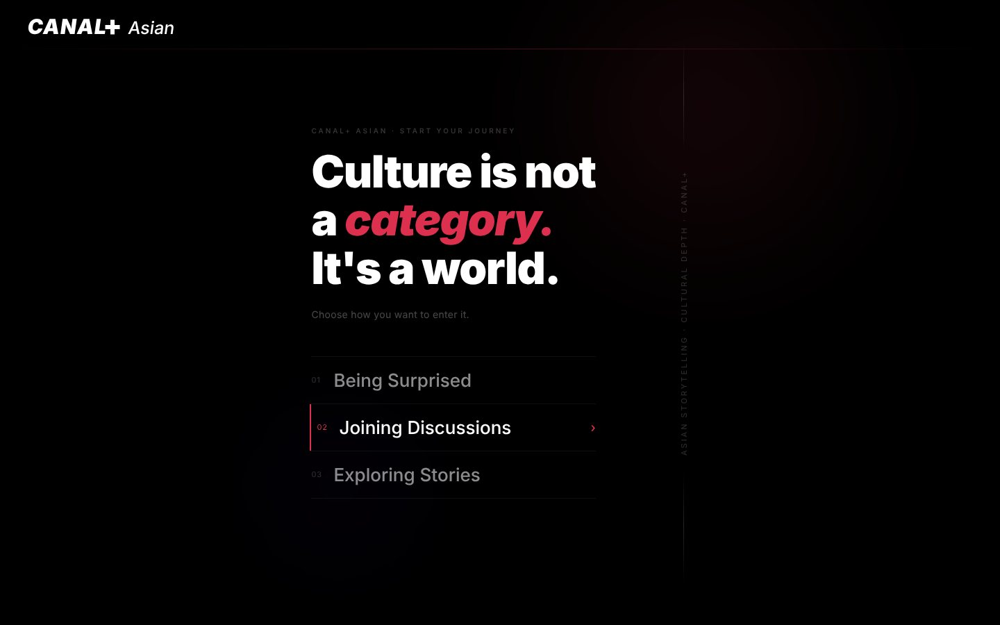
Asian stories get lost twice: at the border, and in translation.
- 77.8%
- had run into geo-restrictions
- 44%
- use VPNs just to keep watching
- 33%
- named missing cultural context as a barrier
- 94%
- wanted a dedicated platform
Survey of 36 international students, followed by 5 interviews.
From a country menu to choosing by mood.
- Round 1
Browsing by country lost viewers with no regional preference. We cut it, and cut the palette to black and red.
- Round 2
The brand read clearly, but culture had gone missing. We added Explore and Discussion.
- Round 3
The final four-page site was validated.
This is the page that convinced me I'd actually use this platform.
Three ways in, none of them an algorithm.
Hand-written HTML, CSS and JavaScript. Click a screen to open it.
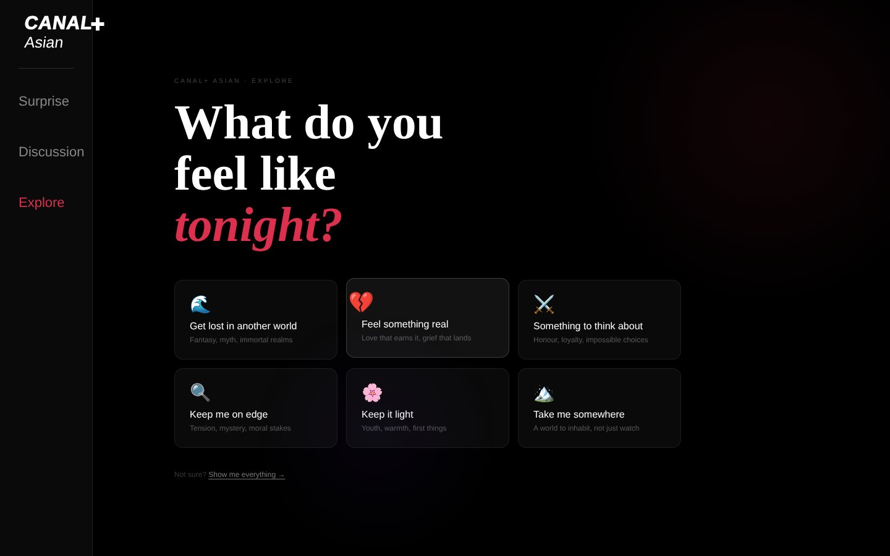
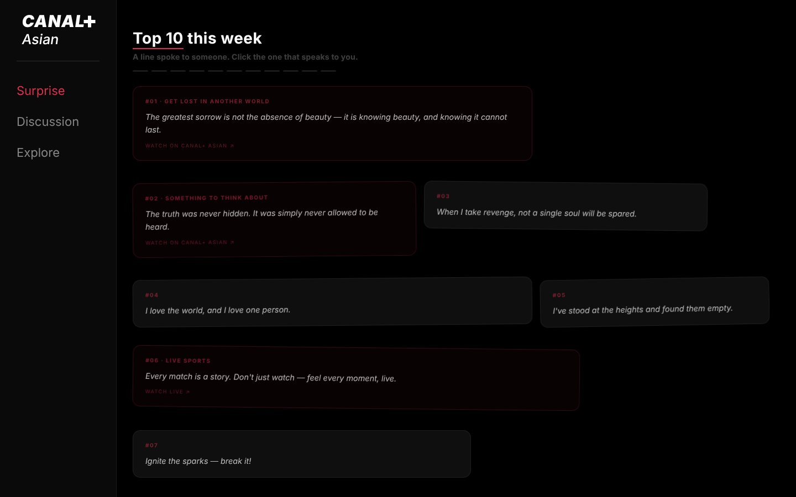
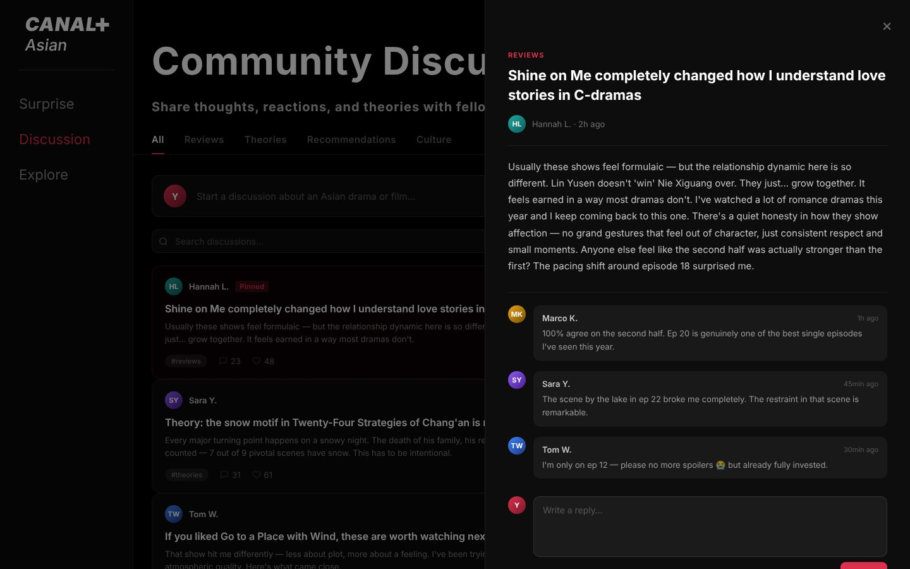
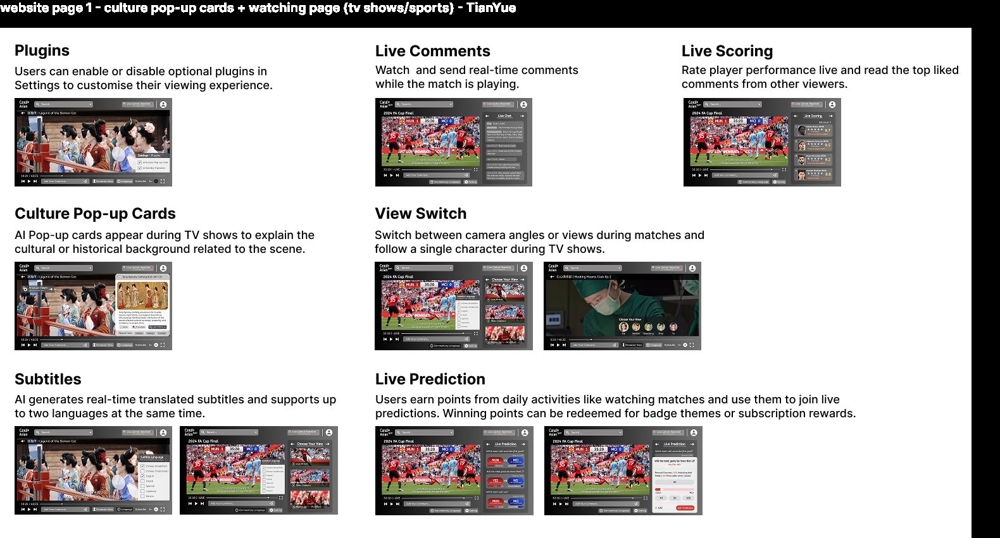
Stop watching more. Start watching better.
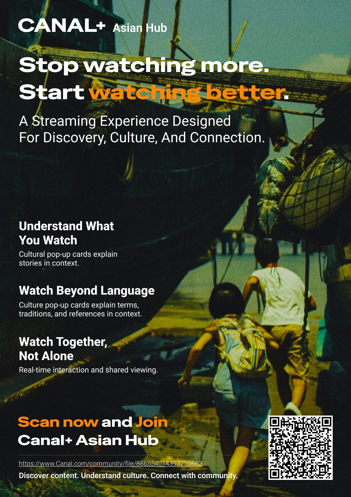
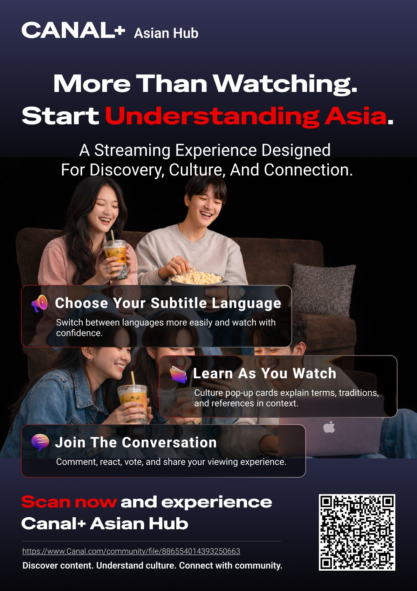
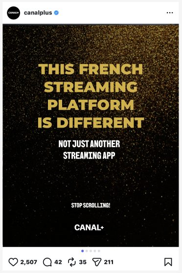
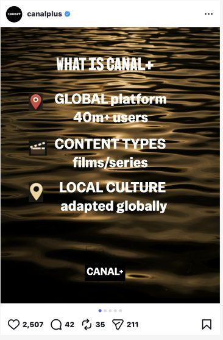
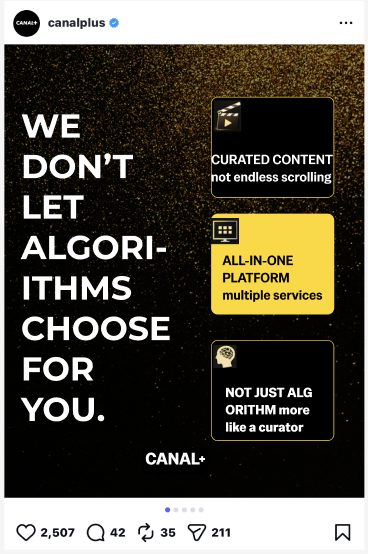
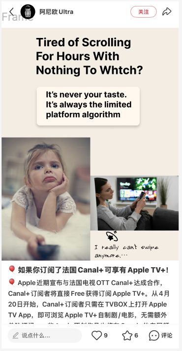
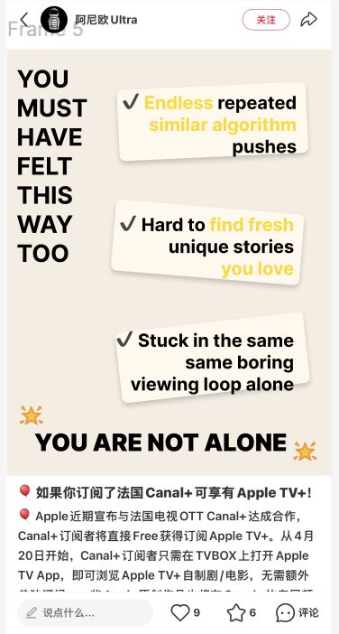
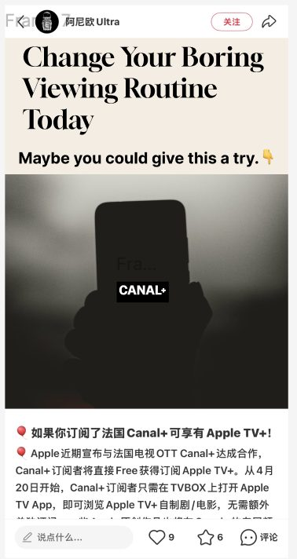
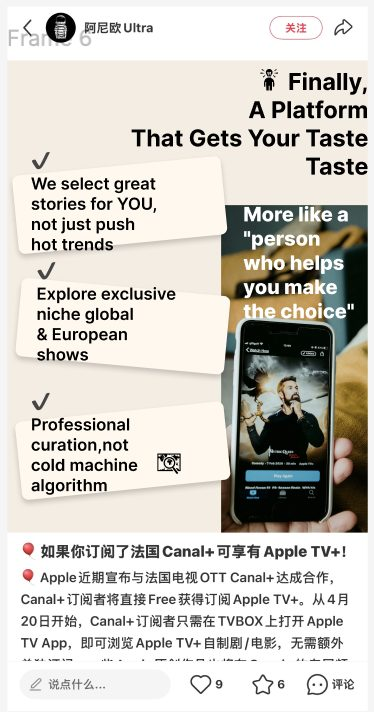
Team · Zifan Zeng (project lead, research, website, pitch), Shiyuan Zhang, Tianyue Xu, Ziyi Fu, Chenyu Zhou, Jiaqi Wang